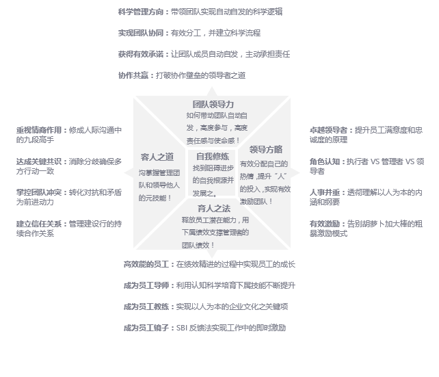
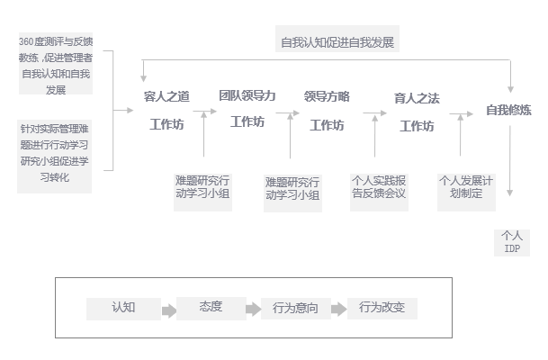
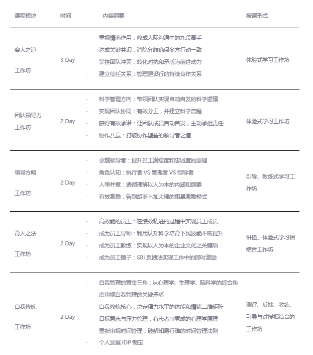

课程目标不是让学员“知道”和“理解”，而是训练学员“掌握”并能创造性的应用在自己的工作环境中；
颠覆灌输式教育、培训，通过情景塑造、场景模拟，让学员自己建构自己的认知与沟通价值观；
中西合用，经典体验式学习让培训回归经验学习范畴，丰富的工具运用解决中国式思考难题：
工具的倍升效能促发有效改变；
团队学习模式，全程采用体验式、引导式学习。
当公司员工流失率比较高时，人员管理与激励成为公司发展的重要问题
公司快速发展, 管理效率不高，管理体系需要提升时；
市场环境发生变化，需要提升管理者团队整体领导力时；
进行人才梯队建设，培养储备干部；
公司快速发展大量提拔业务骨干为经理人。
在团队带领和管理他人时，反思和发展如何有效扮演角色的深层认知和正确的态度，并制定自我发展计划；
掌握并应用管理他人和带领团队的核心技能与工具；
掌握并应用领导力的核心理念和方法、工具。



辅助手段：测评与反馈；
前测：项目开始前对所有参与人员的核心管理技能进行360度测评；
反馈教练：中程进行反馈和教练，订立发展计划；
后测：项目结束后进行再次测评；
辅助手段：行动学习难题研究小组；
实施思路：在两个阶段之间进行针对组织实际管理难题进行兴趣小组研究，并通过行动学习等工具进行催化、辅助；
成果管理：沉淀书面成果，并在组织内部扩散传播。
将中高层团队纳入本学习计划；
形成一致的指导思想与行动思路；
前期通过此段团队学习帮助中高层团队形成变革与转型前的整体思维；
学习项目后期进行团队教练式的变革与转型纲领制定与行动规划。
学习项目中期进行团队探询；
学习项目后期进行团队教练式的变革与转型纲领制定与行动规划。
1、形成自己管理哲学的完整的自我认知。
在自我头脑中建构成型领导力的深层本质：对人的关注（人VS事）；
能觉察自我在管理工作和沟通情境中的思维类型（竞争VS协作VS单干）并能与下属沟通、协作时采用协作（共赢）思维。
2、在自我头脑中产生团队带领哲学的框架思维。
在碰到管理困惑时，能应用赫茨伯格的双因素理论做出正确的团队激励策略，并形成常态；
利用团队领导力的逻辑框架和工具、模型设计自己团队的长期发展计划，并可以设计和发展营造团队自动自发的文化氛围。
3、掌握管理员工的系统理念、工具和方法。
在日常工作中应用辅导和教练员工的经典工具、方法帮助员工成长；
利用绩效管理和任务分配的方法、工具管理团队的绩效和团队成长。
4、制定管理问题解决的自我发展计划。
掌握管理者核心的自我管理工具和方法；
清楚地了解自己的管理技能现状，并制定未来2年内的个人自我发展计划（IDP）。
1、体验可能实现的自我改变。
团队带领风格；
制定科学的自我管理者角色定位；
清晰激励的深层认知和实践路径；
与人沟通的深层指导哲学；
自我管理的动力和计划。
2、巧妙高效吸收以下知识。
管理的本质；
团队文化的本质；
团队目标的建立与统一共识的方法与技巧；
如何有效激励下属。